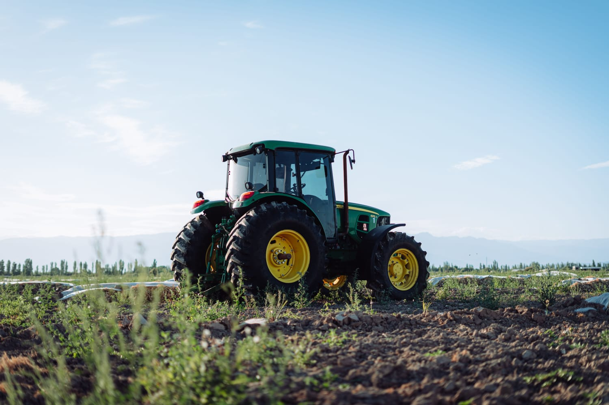

Agro forte, para um futuro sustentável
Olá, visitante, seja bem-vindo!
Aqui você vai aprender um pouco mais sobre produção e preservação do campo.

O que é o agronegócio?
São várias atividades conectadas que vão desde a produção até a matéria-prima, começando no preparo da terra, plantio, colheita e o transporte, passando pela indústria e a comercialização até chegar ao consumidor. Ele também é essencial para a economia, gerando emprego e levando alimento para todos os lugares.
O que é produção sustentável?
Produzir alimentos de forma consciente, tendo cuidado com o manejo do solo, da água e das florestas. Com a preocupação e o cuidado com as próximas gerações, que continuarão utilizando esse solo.
Como o agronegócio preserva o meio ambiente?
Conservação do solo: utilizar o plantio no solo após uma colheita, para aproveitar os nutrientes da terra, fazendo de maneira sustentável e evitando erosões.
Uso consciente da água: com o avanço de tecnologias, como a irrigação programada, que ajuda a utilizarmos a água de forma mais eficiente, evitando desperdícios e aplicando-a no momento certo para as plantas.
Preservação das florestas: a maioria dos produtores rurais têm consciência da importância da natureza, mantendo reservas de mata e protegendo as nascentes.
Redução de desperdício: o uso da tecnologia nas colheitas melhorou bastante, reduzindo perdas de grãos, aproveitando melhor os recursos naturais e evitando danos ao solo.
Tecnologia do campo
Drones: eles ajudam no monitoramento das plantações, fazendo o controle de doenças, pragas, crescimento das plantas e a aplicação de insumos na lavoura.
Irrigação inteligente: são utilizados sensores que acionam apenas quando necessário, diminuindo o desperdício de água.
Agricultura de precisão: utiliza tecnologias como GPS, sensores e programas de computador para monitorar a lavoura, realizar a aplicação de fertilizantes e fazer a irrigação de água na dose e no local certo.
Teste seus conhecimentos!
1. Qual o objetivo de um agronegócio sustentável?
2. Quais são os benefícios que o agronegócio traz para a sociedade?